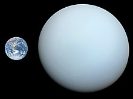
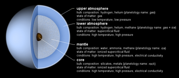

Uranus is the seventh planet from the Sun. It is named after Greek sky deity Uranus (Caelus), who in Greek mythology is the father of Cronus (Saturn), a grandfather of Zeus (Jupiter) and great-grandfather of Ares (Mars). Uranus has the third-largest planetary radius and fourth-largest planetary mass in the Solar System. The planet is similar in composition to Neptune, and both have bulk chemical compositions which differ from those of the other two giant planets, Jupiter and Saturn (the gas giants). For this reason, scientists often distinguish Uranus and Neptune as "ice giants".
As with gas giants, ice giants lack a well-defined solid surface. Uranus's atmosphere is similar to Jupiter's and Saturn's in its primary composition of hydrogen and helium, but it contains more "ices" such as water, ammonia, and methane, along with traces of other hydrocarbons. It has the coldest planetary atmosphere in the Solar System, with a minimum temperature of 49 kelvins (−224 °C; −371 °F). It has a complex, layered cloud structure; water is thought to make up the lowest clouds and methane the uppermost layer. The planet's interior is mainly composed of ices and rock.
Like the other giant planets, Uranus has a ring system, a magnetosphere, and numerous moons. The Uranian system has a unique configuration because its axis of rotation is tilted sideways, nearly into the plane of its solar orbit. Therefore, its north and south poles lie where most other planets have their equators. In 1986, images from Voyager 2 showed Uranus as an almost featureless planet in visible light, without the cloud bands or storms associated with the other giant planets. No other spacecraft have yet visited the planet. Observations from Earth have shown seasonal change and increased weather activity as Uranus approached its equinox in 2007. Wind speeds can reach 250 metres per second (900 km/h; 560 mph).
Uranus's mass is roughly 14.5 times that of Earth, making it the least massive of the giant planets. Its diameter is slightly larger than Neptune's at roughly four times that of Earth. A resulting density of 1.27 g/cm3 makes Uranus the second least dense planet, after Saturn. This value indicates that it is made primarily of various ices, such as water, ammonia, and methane. The total mass of ice in Uranus's interior is not precisely known, because different figures emerge depending on the model chosen; it must be between 9.3 and 13.5 Earth masses. Hydrogen and helium constitute only a small part of the total, with between 0.5 and 1.5 Earth masses. The remainder of the non-ice mass (0.5 to 3.7 Earth masses) is accounted for by rocky material.
The standard model of Uranus's structure is that it consists of three layers: a rocky (silicate/iron–nickel) core in the centre, an icy mantle in the middle and an outer aseous hydrogen/helium envelope. The core is relatively small, with a mass of only 0.55 Earth masses and a radius less than 20% of Uranus'; the mantle comprises its bulk, with around 13.4 Earth masses, and the upper atmosphere is relatively insubstantial, weighing about 0.5 Earth masses and extending for the last 20% of Uranus's radius. Uranus's core density is around 9 g/cm3, with a pressure in the centre of 8 million bars (800 GPa) and a temperature of about 5000 K.The ice mantle is not in fact composed of ice in the conventional sense, but of a hot and dense fluid consisting of water, ammonia and other volatiles. This fluid, which has a high electrical conductivity, is sometimes called a water–ammonia ocean.
The extreme pressure and temperature deep within Uranus may break up the methane molecules, with the carbon atoms condensing into crystals of diamond that rain down through the mantle like hailstones. This phenomenon is similar to diamond rains that are theorised by scientists to exist on Jupiter, Saturn, and Neptune. Very-high-pressure experiments at the Lawrence Livermore National Laboratory suggest that the base of the mantle may comprise an ocean of metallic liquid carbon, perhaps with floating solid 'diamond-bergs'.
The bulk compositions of Uranus and Neptune are different from those of Jupiter and Saturn, with ice dominating over gases, hence justifying their separate classification as ice giants. There may be a layer of ionic water where the water molecules break down into a soup of hydrogen and oxygen ions, and deeper down superionic water in which the oxygen crystallises but the hydrogen ions move freely within the oxygen lattice.
Although the model considered above is reasonably standard, it is not unique; other models also satisfy observations. For instance, if substantial amounts of hydrogen and rocky material are mixed in the ice mantle, the total mass of ices in the interior will be lower, and, correspondingly, the total mass of rocks and hydrogen will be higher. Presently available data does not allow a scientific determination of which model is correct. The fluid interior structure of Uranus means that it has no solid surface. The gaseous atmosphere gradually transitions into the internal liquid layers. For the sake of convenience, a revolving oblate spheroid set at the point at which atmospheric pressure equals 1 bar (100 kPa) is conditionally designated as a "surface". It has equatorial and polar radii of 25,559 ± 4 km (15,881.6 ± 2.5 mi) and 24,973 ± 20 km (15,518 ± 12 mi), respectively. This surface is used throughout this article as a zero point for altitudes